A los arrays nos los podemos encontrar también con el nombre de arreglo. Éstos son estructuras donde puedes almacenar variables del mismo tipo de dato en su interior, como si fuera una cajita con departamentos, donde cada departamento será una posición y dentro de ella almacenaremos un valor.
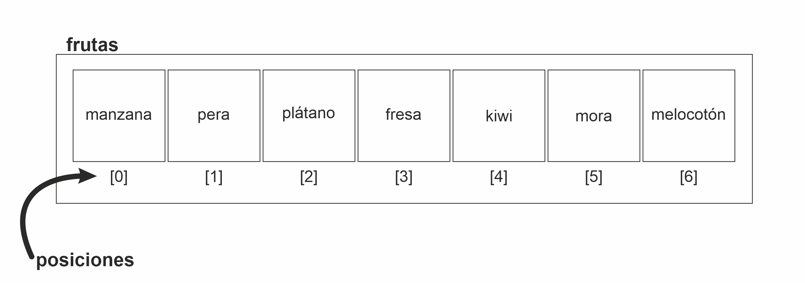Para comenzar a utilizar nuestros arrays primero deberemos declararlos como hacíamos con las variables indicando el tipo de dato que será capaz de almacenar y el identificador.
Para la declaración podremos encontrarnos dos formas de hacerlo, o bien indicando que es un array con el tipo de dato:
String[] nombreArray;
O bien indicándolo en el identificador:
String nombreArray[];
Pero al igual que ocurría con las variables, hasta que no lo inicializas, si intentas imprimir para ver su contenido, da error.
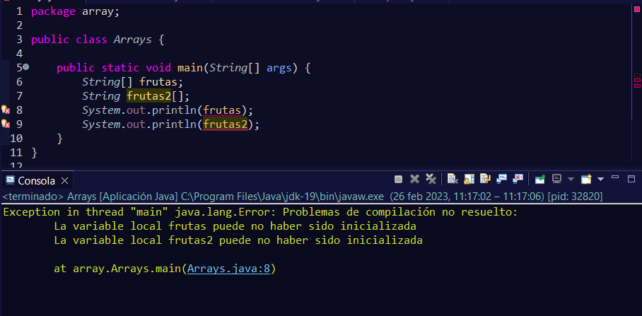Esto es debido a que los arrays son de un índice fijo, es decir, tiene unas posiciones fijas. Entonces, hasta que no se inicializa y se le indica cuántos elementos queremos que se guarden en su interior, nos seguirá dando error.
Para hacerlo tendremos varias formas:
Mediante una declaración implícita:
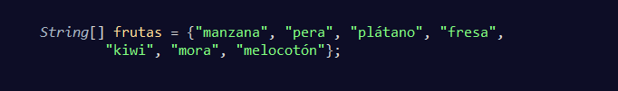Como se ve en el ejemplo, no se indica el tamaño que tendrá el array (posiciones), y en su lugar se va insertando directamente los valores que tendrá iniciales.
Al hacerlo de esta manera, se asumirá que las posiciones totales que tendrá el array será el mismo número que elementos se han declarado al inicio.
Mediante una declaración explícita:
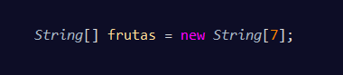En este caso, no se indica los elementos, sino cuántos elementos podrá contener el array.
De esta forma, se saben cuántos elementos puede contener el array.
En cada posición se insertará un valor por defecto hasta que decidamos añadir el valor que queramos almacenar.
Declarando primero el array e inicializándolo después:
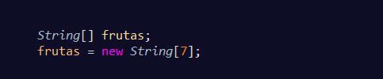Como se ve, en la primera sentencia lo declaramos sin más, y en la segunda sentencia, se le indica cuántos elementos podrá contener el array.
Esta forma no se puede realizar mediante la declaración implícita, si lo intentamos nos dará un error.
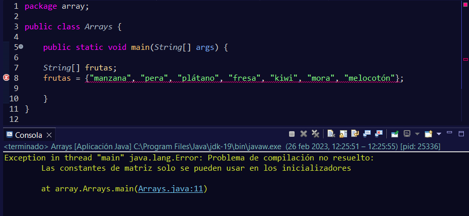Declaración e inicialización explícita con valores iniciales
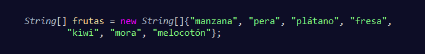De forma explícita determinando el tamaño del array de otras formas.
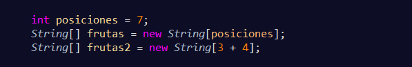En el primer array, se pasa una variable para indicar el valor de las posiciones.
En el segundo array, se pasa una suma para indicar las posiciones.
Como se puede ver, podremos declarar e inicializar de varias maneras distintas.
Si intentamos acceder a un array que ya está inicializado e intentamos imprimir su contenido, obtendremos un resultado algo extraño:
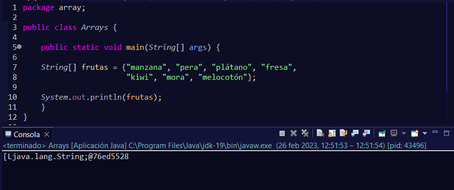En el ejemplo se puede ver un conjunto de caracteres bastante raros y no muestra los elementos que tiene en su interior.
Esto es debido a que los arrays son objetos y no son tipos de datos primitivos, por lo que la forma de acceder a la información que tienen en su interior se hace de otra forma.
Más adelante explicaré por qué aparecen esos caracteres, pero de momento vamos a centrarnos en los arrays y cómo trabajar con ellos.
Para acceder a un elemento concreto de nuestro array, lo único que tendremos que hacer es escribir la posición del elemento que queremos visualizar.
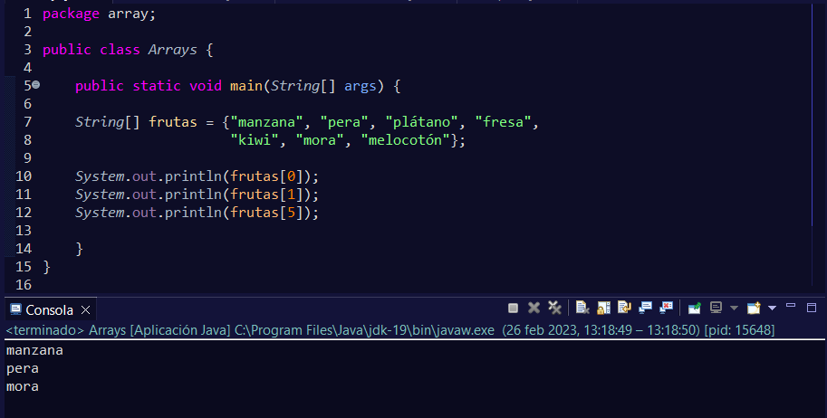También podremos ver todos los elementos del array utilizando el bucle for que se vio con anterioridad:
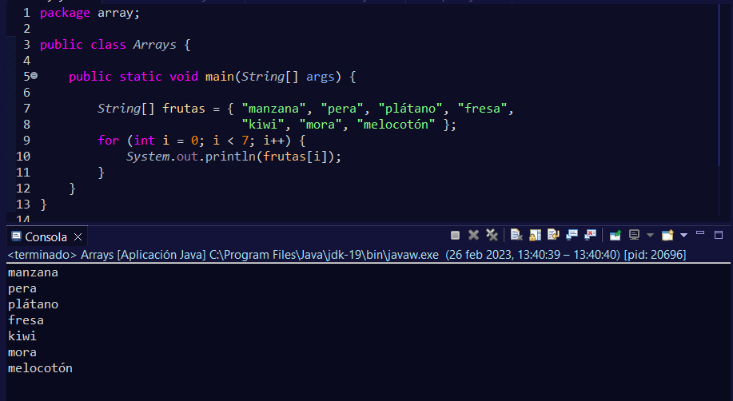Esto está bien cuando conocemos el número de elementos que tenemos en nuestro array, pero si no conocemos cuántos elementos existen, podemos usar el método length para poderlo recorrer. Para ello, basta con colocar el nombre de nuestro array seguido con el punto y escribir length.
array.length
Este método lo podremos colocar directamente en los paréntesis de control del bucle, en la parte de la condición.
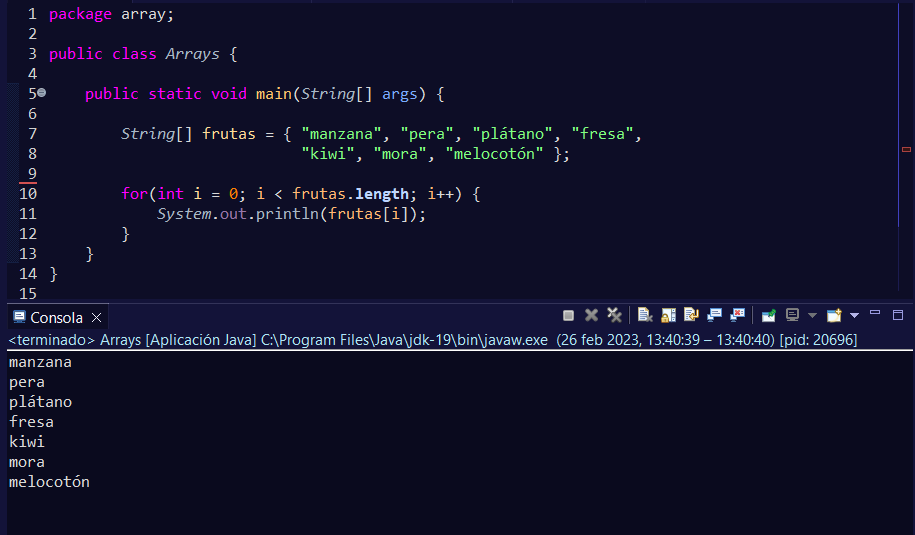frutas.length, devuelve un entero con el tamaño de elementos que contiene el array
Mirando esto, podremos ver que el resultado si queremos podemos almacenarlo en una variable y después pasarla como condición.
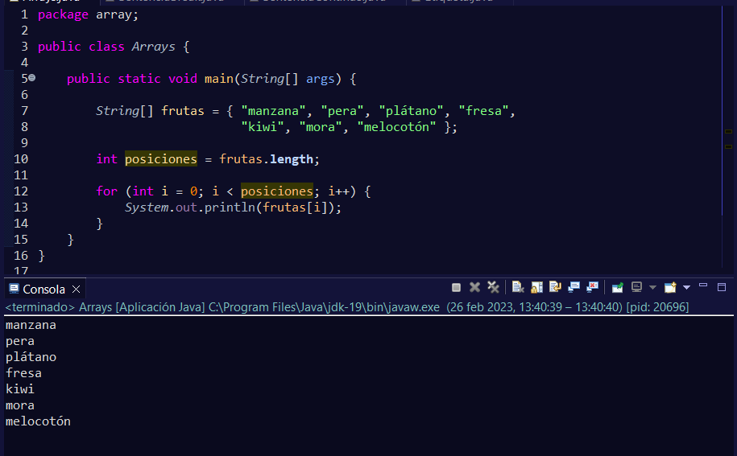